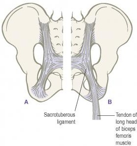
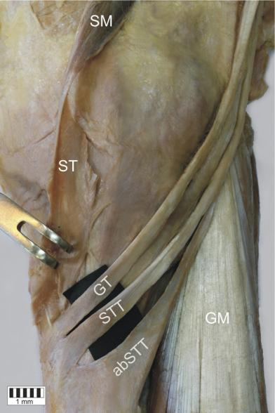
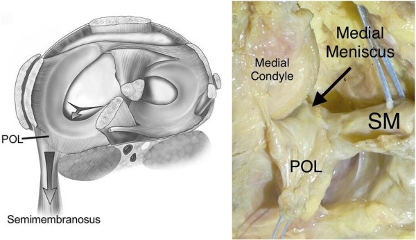
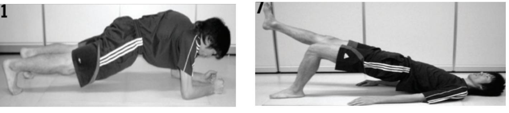
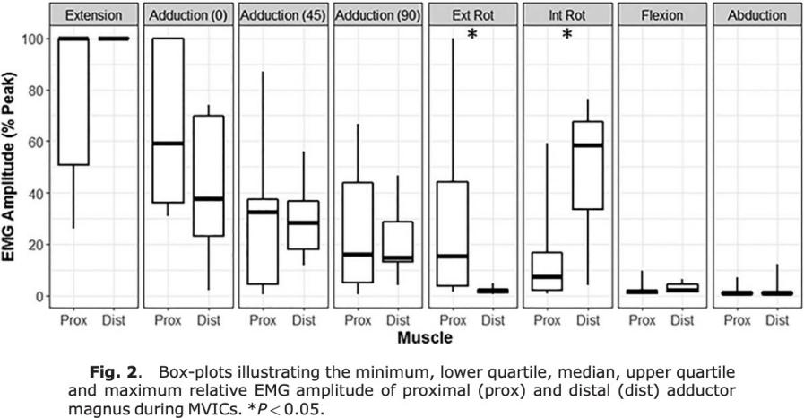
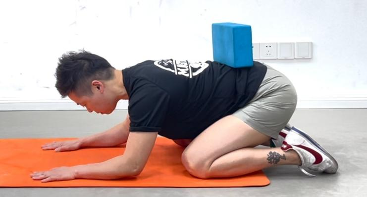
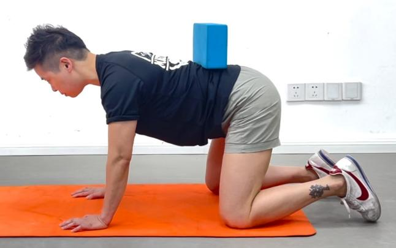
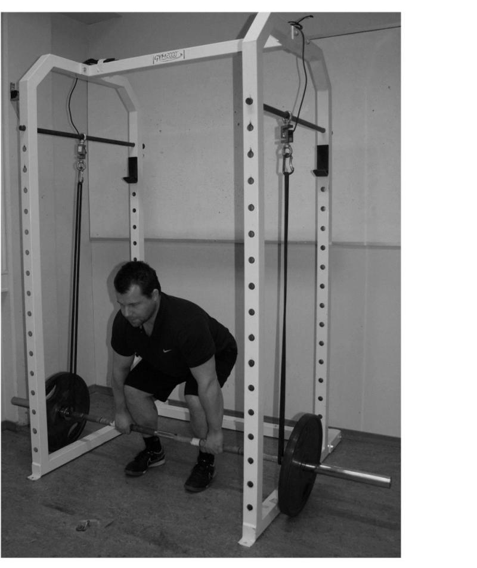
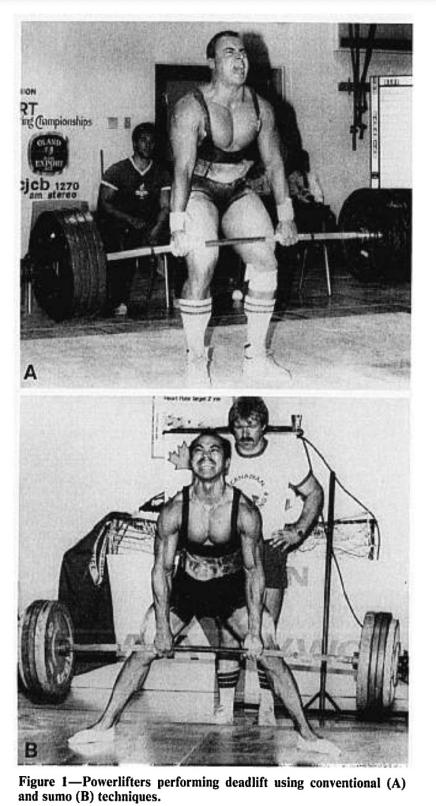
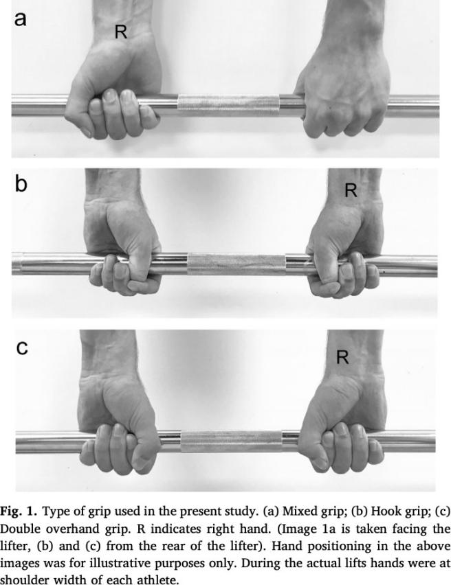

硬拉
硬拉与日常搬举有相似的动作需求：从地面或较低的位置握住物体，通过髋膝伸展将其提起。一个常见的教学故事是，长者练习搬举，最终能够抱起孙辈装饰圣诞树。这个情境体现了力量训练与生活任务的联系，也提醒教练将训练目标具体化。本章介绍硬拉涉及的主要肌群、动作观察和常见变式，帮助学员选择适合自己的练习。
硬拉可服务于一般力量、搬举能力和部分运动表现目标。不同年龄和训练背景的人，可以从合适的起始高度、器械和负荷开始。术后、急性损伤或有持续症状者，需根据临床评估和恢复阶段选择训练；提高搬举能力也可以使用其他合适的动作。
Nigro等（2020）的训练研究中，25名受训男性分别进行6周硬拉或平行深蹲方案，两组均包含跳跃练习，跳跃表现均有改善且组间差异未达显著。硬拉组有3人因腰痛退出。这项研究显示特定综合方案的效果，训练选择仍需管理负荷和个体反应。Chen等（2020）测量卧推、深蹲、硬拉1RM与骨密度，发现部分关联，这是横断面资料。Lang等（2014）对22名成年人开展16周训练，发现不同下肢抗阻方案引起股骨近端不同区域的适应。因而，骨健康训练应考虑长期渐进负荷及个人情况；一次1RM测试反映最大力量，并不等于一次增骨量干预。
硬拉对于身体相关益处的相关文献已相当充分，本章通过解剖学与文献整理，比较各种硬拉变式对身体的刺激差异，为个体化动作选择提供依据。动作选择应基于个体目标、训练阶段和当前能力，而非追求单一最优动作。
硬拉需要下肢发力、躯干传力及上肢握持共同完成。起始位置由身体比例、起始高度和所选变式共同决定，抬起时髋膝协同伸展，脊柱伸肌与腹壁等肌群参与躯干控制。主要参与肌群包括臀肌、腘绳肌、内收肌、股四头肌及躯干肌；不同变式的相对需求有所不同。臀大肌已在臀推章介绍，下面重点讨论腘绳肌、脊柱伸肌和内收肌。
腘绳肌通常包括股二头肌、半腱肌和半膜肌。其中股二头肌分为长头与短头，因此也常按四个组成部分描述。长头、半腱肌和半膜肌跨越髋、膝关节；股二头肌短头只跨越膝关节。理解这种差别，有助于区分伸髋训练与屈膝训练。
从大腿后侧观察，股二头肌位于外侧，半腱肌和半膜肌位于内侧。股二头肌长头与短头在远端汇合并主要止于腓骨头附近，其近端起点不同：长头起于坐骨结节，短头起于股骨后面。
股二头肌长头参与伸髋和屈膝，短头参与屈膝；在膝关节屈曲时，两者还参与小腿外旋。肌肉的力与长度变化受髋、膝角度共同影响。下面分别讨论近端的解剖联系，以及远端连接在动作评估中的意义。
股二头肌长头起于坐骨结节，止于腓骨头附近。它不直接跨越骶髂关节或踝关节，讨论其远端影响时，需要区分解剖联系、力传递假说与人体功能证据。
骶结节韧带连接骶尾部与坐骨结节，参与骨盆环的被动约束。部分标本可见股二头肌长头肌腱与其纤维连续，但连续程度存在个体差异。该结构为力传递提供了解剖可能。Sanika等（2021）的研究比较了两种运动方案与肌肉能量技术组合后的结果，未隔离股二头肌长头的作用。骶髂区域疼痛的识别需临床评估；肌肉紧张感或一般腰痛本身不能定位某一关节病变。

踝背屈需求随走路速度、蹲起深度和任务而变化。评估踝活动度时，应固定足位、膝部姿势和测量方法，并记录症状与左右差异。踝部活动受关节结构、局部软组织、疼痛及运动控制等多因素影响；改善策略应依据具体检查结果。
股二头肌止于腓骨头附近，主要影响膝部屈曲、旋转和局部力传递。腓骨近端与远端通过胫腓关节和骨间膜相联系，其运动是三维且受多结构约束的。实际观察到踝活动受限时，应同时检查足踝和膝髋的任务表现，再确定需要调整的训练环节。
股二头肌的主要训练功能可概括为：长头参与伸髋，两头共同参与屈膝并在屈膝位参与小腿外旋。肌肉能力包括力量、耐力以及在任务所需范围内发力的能力。训练可以结合髋铰链与屈膝练习，柔韧性练习则根据实际受限范围和症状选择。FARES动作库中的腿后侧练习可作为教学资源，执行时仍需个体化调整。
臀推、硬拉和深蹲对腘绳肌的需求随变式、髋膝角度及负荷改变；不同实验的肌电值不宜组成通用的增肌排行榜。以腘绳肌训练为目标时，硬拉类动作可训练伸髋，腿弯举等动作可补充屈膝功能，尤其有助于覆盖不跨髋的股二头肌短头。
Claeys等（2015）跟踪的是站立时本体感觉控制策略与后续腰痛的关系，测量包括踝和背部肌肉振动条件下的姿势控制。研究中的"踝主导策略"与踝关节活动度是不同指标。教练应分别评估任务活动范围、平衡控制及症状，避免用其中一项替代另一项。
半腱肌和半膜肌位于大腿后内侧，两者均参与伸髋、屈膝，并在屈膝位参与小腿内旋；股二头肌则在屈膝位参与小腿外旋。这些肌肉共同协助膝部控制，其作用随关节位置与外部负荷变化。
半腱肌和半膜肌均起于坐骨结节。半膜肌的主要远端附着位于胫骨内侧髁后部，其腱性扩展与膝后内侧关节囊、斜腘韧带及半月板区域存在联系。半腱肌沿膝内侧下行，与缝匠肌、股薄肌共同形成鹅足，附着于胫骨近端前内侧。半腱肌和股薄肌肌腱可用于十字韧带重建等手术；肌腱形态与附加腱束存在个体差异，术后训练需考虑取腱与重建情况。


硬拉变式对半腱肌和股二头肌的相对募集并不完全一致。肌电研究可帮助理解动作差异，但腘绳肌的结构功能与某种动作的治疗效果需要分别评价。长期训练中，关注伸髋和屈膝力量、活动范围、训练耐受及目标任务的进步，更有助于判断计划是否合适。
竖脊肌和多裂肌参与脊柱伸展与姿势控制。硬拉中，外部负荷通常形成使躯干前屈的力矩，背伸肌群与其他躯干肌协同抵抗这一趋势。多裂肌的不同区域作用并不完全相同，也不只承担一种功能。
观察下方平板支撑与单腿臀桥：两者的支点和重力方向如何影响躯干的控制需求？请先分析外部力矩，再讨论可能参与的肌群。

平板支撑需要控制腹部下沉和躯干伸展趋势，单腿臀桥还增加了骨盆旋转控制需求。具体肌电幅度受到支点位置、动作方法和个体能力影响。仅凭面朝上或面朝下的姿势，无法确定每一块脊柱肌肉的募集大小；"感觉更累"也不等于某一目标肌活动更多。
死虫、四点支撑和硬拉分别提供不同的躯干控制任务。教练可通过它们观察呼吸、动作连续性及骨盆躯干的相对运动，但肉眼观察不能确认每一节多裂肌的激活状态。进阶到硬拉时，以轻负荷下可重复完成目标动作、症状稳定及恢复良好为依据，而不是先给某块深层肌肉判定"已开启"。
这个比较强调两件事：肌肉参与取决于任务中的外部力矩和协同控制；主观费力感反映整体体验，不能独立定位某块肌肉的工作量。重力有时阻碍一个方向的动作，也可能促进另一个方向的动作，分析时应先说明关节、运动方向和支点。
在硬拉的俯身位置，杠铃与上半身重力相对腰髋形成外部力矩。为了完成抬起，髋膝肌群产生力，躯干肌群协同传递负荷。
髋铰链需要髋部运动与躯干控制协调，而不是两组肌肉张力的简单竞争。腘绳肌的长度、膝关节屈曲程度、骨盆和躯干位置、身体比例及负荷都会影响起始姿势。初学时可用轻负荷练习髋向后移动、让重量接近身体，再根据可控范围调整起始高度；活动受限者也可适度增加屈膝，而不必一味追求腿后侧拉伸幅度。
腰椎在搬举中可出现一定程度的屈伸，肌肉和被动组织共同分担负荷。躯干角度变化、负重大小、力臂、动作速度和重复暴露都会改变组织需求。对初学者而言，在个人舒适范围内保持较稳定的躯干形态，便于学习和记录进阶；运动专项中的抱石或负重屈曲技术，则需要专门的适应过程与负荷管理。
Cholewicki等（1991）利用模型估计57名力量举选手比赛时的腰椎负荷。模型中的关节力、关节力矩与杠铃质量是不同物理量，内部组织受力还受到肌肉力臂及协同收缩影响。
作为力矩教学例子：80 kg杠铃的重力约为785 N；若其作用线距所选关节轴的水平距离为0.25 m，仅杠铃形成的外部力矩约为196 N·m。此例尚未计入身体各节段重力、加速度和肌肉力。计算结果表示外部力矩，不能直接转化为某块韧带承担的公斤数或损伤阈值。
肌肉、骨与结缔组织具有活跃的代谢和重塑过程，负荷后的适应速率和耐受范围各不相同。训练中应避免超过当前能力的突增负荷，并为恢复留出时间。持续或逐渐加重的疼痛、麻木及明显力量下降，需要进一步评估。动作教学以可控负荷、逐步暴露和症状反馈为基础，不把一次姿势变化直接等同于组织损伤。
传统硬拉的教学目标是让髋膝伸展与躯干控制协调。可通过"脚踩稳""髋与肩一起起""杠铃靠近身体"等提示帮助学员完成动作。若动作反复失控，先调整负荷、起始高度、活动范围或练习方式，再根据反应逐步增加难度。
除了上述体后侧链的肌肉会参与之外，大腿内侧的肌肉也会协同做出硬拉的动作。
大腿内侧常讨论的肌肉包括耻骨肌、内收长肌、内收短肌、内收大肌和股薄肌，其骨盆起点涉及耻骨与坐骨等结构。它们共同参与髋内收，并随髋内收，并随髋位不同参与屈伸和旋转。耻骨肌同时具有屈髋和内收作用；髂肌属于髂腰肌系统，主要参与屈髋，应与内收肌群区分。
内收大肌不同区域的功能有所差别。Benn等（2018）在12名健康成年人中用细线肌电研究近端和远端区域，发现两区域在伸髋任务中均较活跃，旋转任务中的表现有所不同。该结果有助于理解区域协同，适用条件为特定的最大等长测试。
其他内收肌也会随角度与任务改变作用。股薄肌跨越髋膝，参与髋内收、屈膝及屈膝位的小腿内旋，并经鹅足结构参与膝内侧的动态控制。单项内收大肌实验未测量所有内收肌，也不能给其他肌肉规定唯一的最佳收缩角度。

硬拉抬起时，臀大肌、腘绳肌及内收大肌等共同参与伸髋；下放时，重力促进髋屈曲，髋伸肌群可通过离心工作控制速度。单腿硬拉额外增加额状面与水平面的控制需求，髋周肌群的具体分工取决于负荷位置、支撑与动作方式。
硬拉以髋膝协同伸展和躯干传力为基础。腘绳肌、臀大肌、内收大肌与股四头肌的贡献随变式改变，竖脊肌、多裂肌和腹壁等共同参与控制。活动范围应匹配所选起始高度和动作要求，髂肌与内收肌在解剖与功能上分别讨论。
握力、上肢与肩带肌群协助稳定杠铃，让负荷与身体协调移动。接下来将结合动作观察和抓握方式讨论不同变式的应用。
硬拉需要躯干肌群协同建立适合负荷的刚度。可用死虫、四点支撑后坐或轻负荷髋铰链观察呼吸、骨盆移动与躯干控制。四点支撑时放置轻物体，可提供位置变化的反馈；物体移动只是任务表现，不是某节多裂肌失效的诊断。
负重前先熟悉适度腹壁张力和呼吸配合。轻中负荷可自然呼吸或在发力阶段平稳呼气，较重负荷的支撑策略按经验、健康状况和任务调整。若硬拉后反复腰部不适，应检查负荷与总训练量、恢复、动作和症状规律，必要时接受临床评估。


Escamilla等（2002）在13名大学橄榄球运动员中比较硬拉方式及有无腰带条件。腰带条件下，腹直肌与腹外斜肌的肌电呈现不同变化；该研究记录的是特定12RM任务中的肌电，并未验证深层多裂肌的功能恢复或疼痛疗效。腰带可作为负重支撑的辅助工具，其使用效果需要结合本人动作和训练目的评价。
选择腰带时，可先在轻负荷下熟悉腹壁与腰带的接触和呼吸，再决定是否用于较重工作组。腰带可以用于常规训练或比赛准备，仍需管理负荷与疲劳；有无腰带的表现应分别记录。涉及高强度屏气且存在相关健康问题时，应依据专业评估调整策略。
主动直腿抬高可以记录髋部活动与骨盆控制，但测试受到膝位、骨盆移动、神经组织敏感性及配合程度等因素影响。FMS主动直腿抬高评分或站姿抬腿角度可提供筛查信息，硬拉的起始高度与屈膝程度则可个体化调整。实际准备标准是：在选定的变式和范围内，学员能够用轻负荷重复完成动作，症状可接受，并能维持预定节奏。
屈膝外落测试（bent-knee-fall-out, BKFO）可记录特定姿势下髋部活动的表现。采用固定的仰卧、屈膝与足位设置，保持骨盆尽量稳定，记录测量标志、距床面的距离、左右差异及是否疼痛；复测时采用相同方法。距离受身体尺寸及髋部多个方向的活动共同影响。
O'Brien等（2018）在58名14~21岁的足球青训运动员中发现，该测试具有较好的评估者间可靠性。可靠性反映重复测量的一致程度，距离值需要结合症状、个人基线和其他检查解释，不作为单独的拉伤预测或硬拉准入标准。
发现髋内侧紧张或活动受限时，可尝试低强度主动活动、舒适范围内等长收缩或可控的离心练习，并按反应调整。拉伸或手法可作为辅助，选择顺序取决于个体耐受。短时活动度改善属于即时反应，是否保持需要在后续训练中复测；同时检查训练负荷、既往症状和动作要求。
下面从五个方面比较硬拉变式。对初学者，调整变式可以帮助获得舒适且可重复的动作；对有经验者，可用于匹配专项目标或调整训练刺激。各节保留具体应用情境，选择时同时考虑技能、器材、症状和进阶条件。
五个比较主题为：
弹力带的长度变化或铁链离地的长度变化，可以改变动作不同位置的外部阻力。底部固定的弹力带与上方悬挂的辅助带，其负荷分布不同，设置时必须说明固定方式。
Andersen等（2019）在15名有训练经验的男性中比较纯自由重量、两条及四条上方悬挂弹力带辅助的硬拉，分别采用对应条件的2RM。四条弹力带条件下，整段动作的竖脊肌肌电显著高于两条弹力带条件；与纯自由重量相比仅呈较高趋势，未达统计学显著。其他所测肌肉没有显著差异。该实验研究阻力分布变化，并未测试不稳定平面，也未验证针对肌肉失衡的治疗。

该变式的应用要点如下：
此变式适合已经熟悉基本硬拉、希望练习特定负荷分布的学员。记录杠铃重量、带的型号、固定高度与底端和顶端的张力；铁链则记录离地前后承担的重量。若目标是学习髋铰链，优先用可控轻负荷和合适起始高度。某一姿势难以维持时，需要综合判断，不宜直接归因为"腘绳肌太紧"或"多裂肌未启动"。
Lee等（2018）让21名男性按罗马尼亚硬拉1RM的70%完成两种动作，并记录股直肌、股二头肌、臀大肌肌电及下肢关节净力矩。传统硬拉的股直肌和臀大肌肌电较高，股二头肌差异未达显著，膝踝净力矩也存在差异。两动作使用同一基准的负荷，结果反映该条件下的急性表现；长期力量或增肌效果仍需结合训练研究评价。
传统硬拉通常从地面起拉，髋膝协同伸展；罗马尼亚硬拉通常从站立开始下放，保持一定屈膝幅度，以髋向后移动为主要动作特征。两者可以分别服务于不同目标，没有固定的先后等级。
教学情境：一名学员已有60 kg的罗马尼亚硬拉6RM经验，初学传统硬拉时，可先用明显低于极限的重量熟悉地面起拉。45 kg可以作为一次试练重量，但应根据实际完成情况继续增减，而不是直接规定为新的6RM。初期保留约2~4次余力是可操作的起点；不按性别推定动作控制能力。
相扑硬拉采用较宽站距，手臂位于双腿之间；传统硬拉站距较窄，手臂位于腿外侧。两者的躯干角度、运动距离及关节力矩分布可有差异。个人能拉起的重量受到技术经验、身体比例与力量分布影响，不能仅用杠铃行程推定。
Escamilla等（2002）研究13名大学橄榄球运动员在12RM条件下的硬拉。相扑式的股内侧肌、股外侧肌和胫骨前肌总体肌电较高，传统式的腓肠肌内侧头较高。其余肌群没有显著差异，表示该样本和条件下未观察到明确组间差别，而不是所有负荷和个体都完全相同。

Cholewa等（2019）研究47名有抗阻训练经验但缺少硬拉经验的成年人。先进行两次教学，随后随机顺序测试两种硬拉1RM，再分别用各自60% 1RM完成至自主疲劳的次数测试。坐高与身高比例和两种动作的相对成绩存在较弱关系，完整的人体测量预测模型未显著预测表现。身体比例可帮助提出试练方案，最终选择仍以实际动作、舒适度和训练反应为依据。
Cholewicki等（1991）的比赛数据模型估计中，相扑式在L4/L5的关节力矩约低10%，剪切力约低8%。这些数值属于所研究选手、技术和模型假设下的群体结果，不能直接作为个人损伤概率或康复疗效。脊柱负荷还需区分压缩力、剪切力和关节力矩。
相扑式对髋外展和外旋位置的耐受提出不同要求。髋部舒适度还受到关节结构、站距、脚尖方向和负荷影响。先用较轻重量试练不同站距，观察是否出现腹股沟夹挤、膝部不适或动作失控，再选择合适设置。
教学情境：躯干相对较长的学员可以试练相扑式，但仍需比较两种动作的稳定性、舒适度和可重复表现。有腰痛病史者，从合适的负荷与高度开始，并记录训练中和次日反应；髋外展外旋位置不耐受者可缩小站距或改用其他变式。既往病史并不能单独决定某种硬拉更安全。
Camara等（2016）对20名有硬拉经验的男性先分别测试两种杠铃的1RM，再以65%和85% 1RM各完成3次进行比较。该样本两种器械的1RM差异未达显著。六角杠条件下股外侧肌肌电以及峰值力、功率和速度较高；直杠条件下部分阶段的股二头肌和竖脊肌肌电较高。研究没有直接测量腰椎关节压力，也没有检验腰椎不稳患者的康复效果。
六角杠提供不同握持位置，部分器械还有较高把手，便于调整起始高度。可依据动作目标和舒适度选择，记录把手高度与活动范围，并与同样设置下的既往表现比较。
正反握将一手旋前、另一手旋后，有助于限制杠铃滚动。Pratt等（2020）让29名受训者在50%、70%和90% 1RM下比较正反握、锁握与双正握；正反握的肱桡肌和尺侧腕屈肌肌电较低，主观技术难度也较低，握法对峰值速度未显示显著影响。"较容易"描述的是任务体验，并不等于本体感觉受损。
Beggs（2011）的硕士论文比较10名受训者的握法，观察到正反握时部分上肢肌电及腕肘角度存在双侧不对称。它提供急性实验线索，没有跟踪肌腱损伤发生率。教学中保持手臂伸直，避免一边起拉一边屈肘；选择握法时兼顾握持稳定、舒适度和长期训练安排。
锁握先以拇指绕住杠，再由食指和中指等压住拇指，以提高握持稳定性。Oranchuk等（2019）研究11名有锁握经验男性的力量翻表现，观察到锁握条件下的1RM及部分次最大负荷表现较好；该研究的动作是力量翻。硬拉训练中的锁握选择应依据本人握持稳定、手型、经验与舒适度。可从轻负荷逐步熟悉，明显疼痛、麻木或皮肤损伤时及时调整，不以忍痛作为训练质量标准。

握力带帮助连接手腕与杠铃，可降低握持成为训练限制因素的程度，髋膝和躯干肌群仍需完成负重任务。Jukic等（2021）在16名男性的硬拉实验中发现，其效果与负荷匹配方法有关，同一绝对负荷下使用握力带可改善部分速度与主观指标。该研究未检验长期损伤率。需要重点训练后侧链但握力先疲劳时，可选用握力带，同时另外安排握力练习。
握法应用：双正握适合练习基本握持，也便于维持两侧手臂位置一致；较重负荷可按需要采用锁握、正反握或握力带。采用握力带时先学习缠绕、放下和脱离方式；正反握应注意两侧位置与伸肘控制；锁握需逐步适应拇指压力。比赛准备按所参加项目规则选择器具。选择依据是目标、控制与耐受，而不是把疼痛或难受当作效果更好的标志。
以下用三个教学情境整合选择原则。共同前提是先确定训练目标，采用可控负荷与适合的活动范围，并观察症状和恢复。
以腘绳肌发展为目标时，可把髋伸与屈膝练习组合。Maeo等（2021）在20名健康成年人中比较12周坐姿和俯卧腿弯举，发现坐姿条件的整体腘绳肌及双关节肌增长较多，单关节部分差异较小。Maeo等（2024）进一步比较12周北欧式腘绳肌与较长肌肉长度下的离心屈膝训练，观察到不同肌肉的增长模式存在差别。这些结果支持按解剖功能和长度条件组合动作；肌肉体积变化与损伤发生率属于不同结局。
一般无症状初学者可先安排每周1~2次硬拉或其简化变式，每次2~3个工作组、每组5~8次，保留约2~4次余力。先用轻重量完成热身和技术练习，工作组之间休息约2~3分钟，必要时延长。上述数字是可调整的教学起点，而非所有人的最佳剂量。
进阶时检查四项：目标范围内的动作可重复；负荷与次数符合计划；训练中症状可接受且未持续加重；下一次训练前恢复充分。满足这些条件后，可小幅增加重量、次数或活动范围，避免同时大幅提高多项要求。握法、腰带、把手高度或弹力带设置变化时，应重新建立该条件下的负荷记录。
臀推和硬拉同周安排时，应合并考虑髋伸肌及躯干的总疲劳。若一节课同时练习两者，可优先练习当前最重要、技术要求更高的动作，并相应减少另一动作的量。为增肌补充腿弯举时，从可恢复的少量开始；专项极限力量训练与一般教学练习分别编排。
硬拉和深蹲都可以帮助建立下肢力量及生活任务所需的能力。长期收益来自规律训练、渐进负荷和足够恢复。教练的工作是把动作和负荷调整到学员能够持续学习的位置，并用可记录的表现检验进步；不同变式是实现目标的工具，可以随阶段灵活选择。
Martín-Fuentes等（2020）. Electromyographic activity in deadlift exercise and its variants. A systematic review.
https://doi.org/10.1371/journal.pone.0229507
Nigro与Bartolomei（2020）. A Comparison Between the Squat and the Deadlift for Lower Body Strength and Power Training.
https://doi.org/10.2478/hukin-2019-0139
Chen等（2020）. Maximal muscle strength and body composition are associated with bone mineral density in chinese adult males.
https://doi.org/10.1097/MD.0000000000019050
Lang等（2014）. Spatial heterogeneity in the response of the proximal femur to two lower-body resistance exercise regimens.
https://doi.org/10.1002/jbmr.2155
Claeys等（2015）. Young individuals with a more ankle-steered proprioceptive control strategy may develop mild non-specific low back pain.
https://doi.org/10.1016/j.jelekin.2014.10.013
Olewnik等（2019）. A proposal for a new classification of pes anserinus morphology.
https://doi.org/10.1007/s00167-018-5318-3
Vieira等（2019）. Arthroscopic Dissection of the Distal Semimembranosus Tendon: An Anatomical Perspective on Posteromedial Instability and Ramp Lesions.
https://doi.org/10.1016/j.eats.2019.05.008
Khan等（2023更新）. Anatomy, Bony Pelvis and Lower Limb: Thigh Gracilis Muscle.
https://www.ncbi.nlm.nih.gov/books/NBK538229/
Giphart等（2012）. Recruitment and activity of the pectineus and piriformis muscles during hip rehabilitation exercises: an electromyography study.
https://doi.org/10.1177/0363546512443812
Benn等（2018）. Adductor magnus: An EMG investigation into proximal and distal portions and direction specific action.
https://doi.org/10.1002/ca.23068
Andersen等（2019）. Electromyographic comparison of the deadlift with bands versus free weights.
（原文引用，DOI待确认）
Lee等（2018）. Comparison of lower extremity kinematics and muscle activation during conventional and Romanian deadlifts.
（原文引用，DOI待确认）
Escamilla等（2002）. An electromyographic analysis of sumo and conventional style deadlifts.
（原文引用，DOI待确认）
Cholewa等（2019）. Anthropometric determinants of deadlift performance.
（原文引用，DOI待确认）
Cholewicki等（1991）. Loads on the L4/L5 intervertebral joint during deadlift.
（原文引用，DOI待确认）
Camara等（2016）. Comparison of muscle activation and kinematics between hex-bar and straight-bar deadlifts.
（原文引用，DOI待确认）
Pratt等（2020）. Effects of grip technique on muscle activation and performance during the deadlift.
（原文引用，DOI待确认）
Beggs（2011）. The effect of grip strength on deadlift performance. [Master's thesis].
Oranchuk等（2019）. Effects of the hook grip on power clean performance.
（原文引用，DOI待确认）
Jukic等（2021）. Effects of lifting straps on deadlift performance.
（原文引用，DOI待确认）
Maeo等（2021）. Sit-up vs. prone leg curl: effects on hamstring hypertrophy.
（原文引用，DOI待确认）
Maeo等（2024）. Nordic hamstring vs. eccentric knee flexion at long muscle length.
（原文引用，DOI待确认）
O'Brien等（2018）. Reliability of the bent-knee-fall-out test in youth soccer players.
（原文引用，DOI待确认）
Sanika等（2021）. Exercise interventions and muscle energy technique for sacroiliac pain.
（原文引用，DOI待确认）